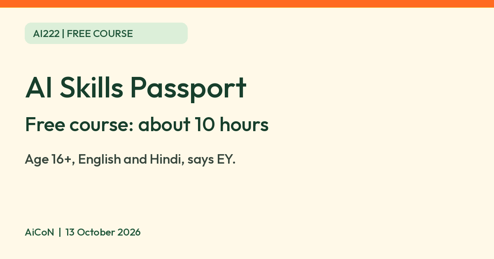

EY and Microsoft AI Skills Passport: a free 10-hour AI course for ages 16 and up
EY says its AI Skills Passport with Microsoft is a free online course of about 10 hours for ages 16 and up. EY India lists English and Hindi. Check the certificate wording and data note first.

Official EY and Microsoft course branding
No EY stock photos are used.
What it is
The AI Skills Passport is an online AI course made by EY and Microsoft. EY says it is a self-paced program of about 10 hours that covers what AI is and is not, the different types of AI and how they are used today, responsible AI, AI in business and technology careers, and job-readiness skills. EY's India announcement says it includes video modules, practice exercises and assessments, and is available in English and Hindi.
Is it free?
Yes. EY's page calls it "a free online learning program available via web and mobile". EY's India announcement of 9 October 2025 calls it a fully online, free program. You need to register on EY's learning portal to start.
Who can join, and India
- Age: EY says it is for students and learners aged 16 and older.
- India: EY India's announcement says the program launched in India with English and Hindi content. EY's global page says it is available in multiple countries.
- No fee, card or subscription is mentioned on the EY pages we read.
What you get at the end
- EY's global page says completing the course gives a co-branded EY and Microsoft certificate of completion, plus a list of websites and resources for further learning or jobs.
- EY India's announcement says successful completion gives a verifiable digital badge.
- The two pages word this differently. We could not confirm from EY which one you get in India, so check on the portal before you start.
Privacy and data
- You create an account on EY's course portal, so EY will hold your sign-up details.
- We did not find a data-use or privacy statement written for this course, so we cannot say how your details are used. EY's announcement points to EY's legal and privacy page for how EY handles personal data.
- AiCoN advice: use an email address you do not mind sharing, and read the privacy notice on the sign-up page before you register.
Frequently asked questions
Is the AI Skills Passport free?
Yes, EY describes it as a free online program.
How long does it take?
EY says about 10 hours, at your own pace.
Is it only for students?
EY says it is for students aged 16 and older. EY's India announcement also mentions early-career professionals.
Is it in Hindi?
EY India says the program is available in English and Hindi.
What changed since this post?
EY's global page and gsp.ey.com were opened on 13 October 2026 and still describe the course as free. The portal welcome page loads; no account was created and registration or course access was not tested. The India release remains dated 9 October 2025. Certificate and digital-badge wording are reported separately from each page. No course-specific privacy statement was found.
Sources: EY: AI Skills Passport, EY India: launch announcement, 9 October 2025, EY Microsoft Skills Passport course portal. Checked 13 October 2026.